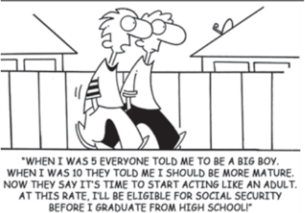

Questão 6 (enem 2018)
Lava Mae: Creating Showers on Wheels for the Homeless San Francisco, according to recent city numbers, has 4,300 people living on the streets. Among the many problems the homeless face is little or no access to showers. San Francisco only has about 16 to 20 shower stalls to accommodate them. But Doniece Sandoval has made it her mission to change that. The 51-year-old former marketing executive started Lava Mae, a sort of showers on wheels, a new project that aims to turn decommissioned city buses into shower stations for the homeless. Each bus will have two shower stations and Sandoval expects that they'll be able to provide 2,000 showers a week. ANDREANO, C. Disponível em: http://abcnews.go.com. Acesso em: 26 jun. 2015 (adaptado).
A) empregar moradores de rua em lava a jatos para ônibus
B) criar acesso a banhos gratuitos para moradores de rua.
C) comissionar sem-teto para dirigir os ônibus da cidade.
D) exigir das autoridades que os ônibus municipais tenham banheiros.
E) abrigar dois mil moradores de rua em ônibus que foram adaptados.
Mostrar resposta
Alternativa correta: Letra B
Questão 7 (enem 2018)

A) se aposentar prematuramente
B) amadurece precocemente.
C) estude aplicadamente.
D) se forme rapidamente.
E) ouça atentamente
Mostrar resposta
Alternativa correta: Letra B
Questão 8 (enem 2018)
Don't write in English, they said, English is not your mother tongue... ...The language I speak Becomes mine, its distortions, its queerness All mine, mine alone, it is half English, half Indian, funny perhaps, but it is honest, It is as human as I am human... ...It voices my joys, my longings my Hopes... (Kamala Das, 1965:10) GARGESH, R. South Asian Englishes. In: KACHRU, B. B.: KACHRU
A) usa a língua inglesa com efeito humorístico
B) recorre a vozes de vários escritores ingleses.
C) adverte sobre o uso distorcido da língua inglesa.
D) demonstra consciência de sua identidade linguística.
E) reconhece a incompreensão na sua maneira de falar inglês.
Mostrar resposta
Alternativa correta: Letra D
Questão 9 (enem 2018)
TEXTO I
A Free World-class Education for Anyone Anywhere
The Khan Academy is an organization on a mission.
We're a not-for-profit with the goal of changing education
for the better by providing a free world-class education to
anyone anywhere. All of the site's resources are available
to anyone. The Khan Academy's materials and resources
are available to you completely free of charge.
Disponível em: www.khanacademy.org. Acesso em: 24 fev. 2012
(adaptado).
TEXTO II
I didn't have a problem with Khan Academy site
until very recently. For me, the problem is the way Khan
Academy is being promoted. The way the media sees it
as “revolutionizing education”. The way people with power
and money view education as simply “sit-and-get”. If your
philosophy of education is “sit-and-get”, i.e., teaching is
telling and learning is listening, then Khan Academy is way
more efficient than classroom lecturing. Khan Academy
does it better. But TRUE progressive educators, TRUE
education visionaries and revolutionaries don't want to do
these things better. We want to DO BETTER THINGS.
Disponível em: http://fnoschese.wordpress.com. Acesso em: 2
mar. 2012.
A) elogiar o trabalho proposto para a educação nessa era tecnológica.
B) reforçar como a mídia pode contribuir para revolucionar a educação.
C) chamar a atenção das pessoas influentes para o significado da educação.
D) destacar que o site tem melhores resultados do que a educação tradicional.
E) criticar a concepção de educação em que se baseia a organização.
Mostrar resposta
Alternativa correta: Letra E
Questão 10 (enem 2018)
1984 (excerpt) ‘Is it your opinion, Winston, that the past has real existence?’ [...] O'Brien smiled faintly. ‘I will put it more precisely. Does the past exist concretely, in space? Is there somewhere or other a place, a world of solid objects, where the past is still happening?’ ‘No.’ ‘Then where does the past exist, if at all?’ ‘In records. It is written down.’ ‘In records. And — —?’ ‘In the mind. In human memories.’ ‘In memory. Very well, then. We, the Party, control all records, and we control all memories. Then we control the past, do we not?’ ORWELL, G. Nineteen Eighty-Four. New York: Signet Classics, 1977.
A) boicote a ideais libertários.
B) veto ao culto das tradições.
C) poder sobre memórias e registros.
D) censura a produções orais e escritas.
E) manipulação de pensamentos individuais.
Mostrar resposta
Alternativa correta: Letra C